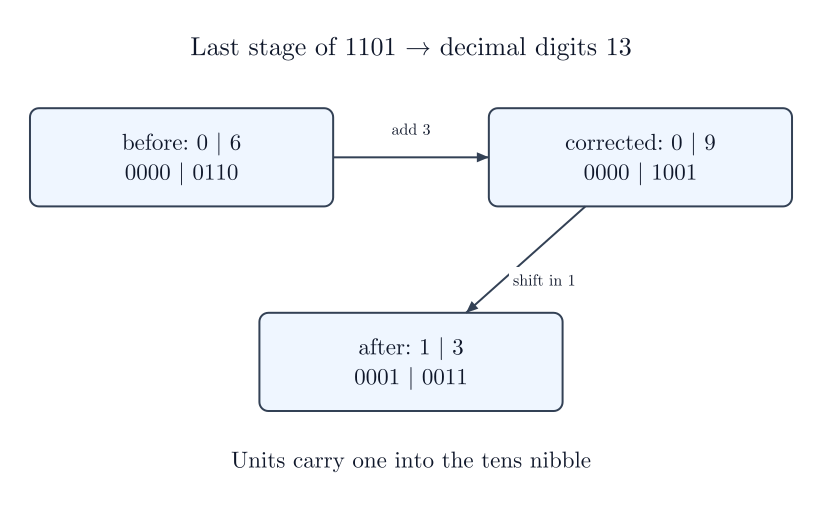
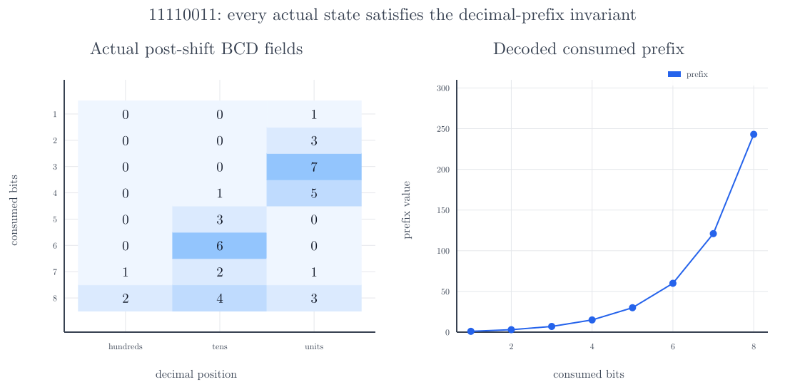
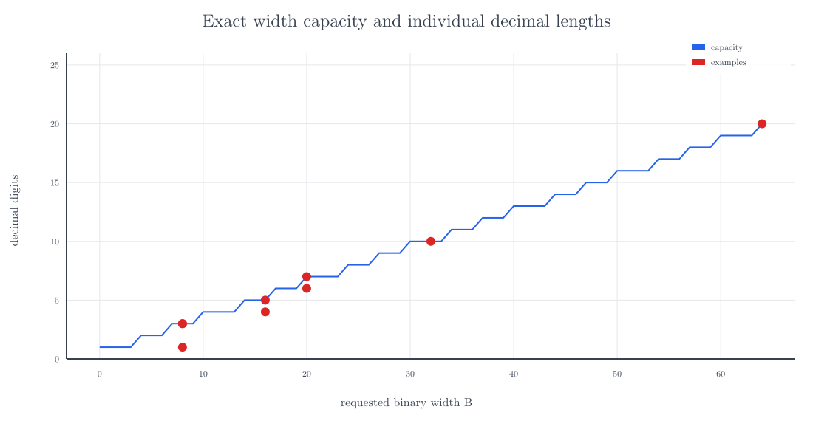
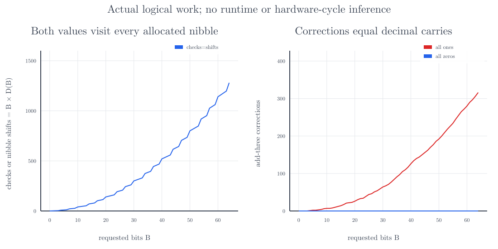
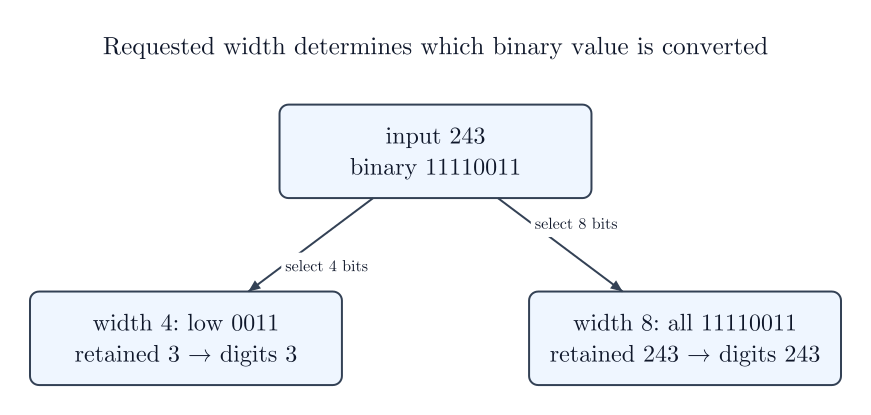

Double Dabble: Actual Add-Three States, Decimal Carries and Checked Bit Widths
Abstract
Given a binary integer, we want its decimal digits using a conversion recurrence that can be built from shifts, comparisons and small constant adds. Binary-coded decimal stores each decimal digit in a four-bit nibble, so an ordinary binary shift needs a correction at decimal carry boundaries. Double Dabble adds three before shifting every digit at least five. We derive that correction, inspect actual states for 13 and 243, retain the original eight conversions and add the full uint64_t boundary. Exact width capacity, measured nibble operations and deliberate low-bit truncation separate the algorithm from formatting and hardware timing claims. The canonical core now validates widths and provides owned stage evidence and a checked inverse for unpacked BCD digits.
Thirteen by hand: correct six before the last shift
Take binary 1101, with four requested input bits. The consumed prefixes are 1,3,6,13. Just before the last bit, the padded BCD field contains [0,6]. Correct six to nine, then shift in the final one bit. The units nibble computes 2·9+1=19, producing low nibble three and carry one; the tens nibble receives that carry. The final BCD field is [1,3]. Each digit has its own four-bit encoding: 0001 0011 represents the BCD digits one and three. Formatting those digits produces text “13”.
The table and diagram below use actual snapshots from the shared executing kernel. Leading zero nibbles remain in stage evidence so that carry movement is visible; the final digit result removes that padding.
#include <dm/dm.hpp>
int main() {
std::filesystem::create_directories("build");
const auto t=dm::algorithms::double_dabble_trace(13,4);
std::print("| consumed bits | next bit | before | corrected | after | prefix |\n| ---: | ---: | :--- | :--- | :--- | ---: |\n");
for(std::size_t i=0;i<t.steps.size();++i) {
const auto& s=t.steps[i];
std::print("| {} | {} | {} | {} | {} | {} |\n",i+1,s.input_bit,s.before,s.corrected,s.after,s.prefix);
}
const auto& s=t.steps.back();
std::print("\nLast carry-outs {}; result {}; digit checks {}; corrections {}.\n",s.carry_out,t.digits,t.work.digit_checks,t.work.add3_corrections);
dm::graphics::Diagram d(82,1100);
dm::graphics::DiagramNodeStyle box;box.width=3.7;box.height=1.2;box.font_size=23;
d.node("before",{0,2},std::format("before: {} | {}\n{:04b} | {:04b}",s.before[0],s.before[1],s.before[0],s.before[1]),box)
.node("corrected",{5.6,2},std::format("corrected: {} | {}\n{:04b} | {:04b}",s.corrected[0],s.corrected[1],s.corrected[0],s.corrected[1]),box)
.node("after",{2.8,-.5},std::format("after: {} | {}\n{:04b} | {:04b}",s.after[0],s.after[1],s.after[0],s.after[1]),box)
.edge("before","corrected","add 3")
.edge("corrected","after","shift in 1")
.text({2.8,3.35},"Last stage of 1101 → decimal digits 13",26)
.text({2.8,-1.7},"Units carry one into the tens nibble",23)
.save_svg("build/dabble_thirteen.svg");
}| consumed bits | next bit | before | corrected | after | prefix |
|---|---|---|---|---|---|
| 1 | 1 | [0, 0] | [0, 0] | [0, 1] | 1 |
| 2 | 1 | [0, 1] | [0, 1] | [0, 3] | 3 |
| 3 | 0 | [0, 3] | [0, 3] | [0, 6] | 6 |
| 4 | 1 | [0, 6] | [0, 9] | [1, 3] | 13 |
Last carry-outs [0, 1]; result [1, 3]; digit checks 8; corrections 1.

Derive the add-three rule and the prefix invariant
Let d∈{0,…,9} be a valid decimal digit and c∈{0,1} its incoming carry, or the next binary input bit at the units position. Decimal doubling requires low digit (2d+c) mod 10 and carry floor((2d+c)/10).
If d<5, then 2d+c≤9: shifting the nibble needs no correction. If d≥5, pre-add three. The shifted binary nibble becomes
Its bit-four carry is one and its low four bits are exactly the desired decimal remainder, between zero and nine. The threshold is still five when c=1. This proves the local rule for all twenty digit/carry pairs. Carry propagation runs from the units nibble toward the most significant. Corrected intermediate nibbles may have values ten, eleven or twelve; they are binary intermediate fields rather than valid decimal digits.
For the global invariant, let Pₖ be the selected binary prefix after k bits. Initially P₀=0 and the BCD field is zero. Each next bit b gives Pₖ₊₁=2Pₖ+b. The local correction makes the entire BCD field perform this exact decimal doubling and incoming-bit addition. Induction proves that every post-shift state encodes its consumed prefix, including the final selected value. Capacity sufficient for the full requested width also suffices for every prefix.
Inspect all eight stages of 243
The original first input is 243, binary 11110011. Its prefixes are 1,3,7,15,30,60,121,243. The next table shows every actual correction and outgoing carry. For example, prefix seven is corrected to nibble ten before shifting in the fourth one bit. The post-shift field is again valid BCD, representing fifteen. The heatmap retains all three requested- width nibbles; the curve decodes the same post-shift states.
#include <dm/dm.hpp>
int main() {
std::filesystem::create_directories("build");
const auto t=dm::algorithms::double_dabble_trace(243,8);
std::vector<std::vector<double>> z(3,std::vector<double>(8));
std::vector<double> stage,prefix,rows;
std::vector<std::string> row_names;
std::print("| stage | input | before | corrected | after | carry-outs | prefix |\n| ---: | ---: | :--- | :--- | :--- | :--- | ---: |\n");
for(std::size_t i=0;i<t.steps.size();++i) {
const auto& s=t.steps[i];
if(dm::algorithms::bcd_to_uint64(s.after)!=s.prefix) throw std::runtime_error("prefix invariant failed");
std::print("| {} | {} | {} | {} | {} | {} | {} |\n",i+1,s.input_bit,s.before,s.corrected,s.after,s.carry_out,s.prefix);
stage.push_back(i+1);prefix.push_back(s.prefix);
for(std::size_t j=0;j<3;++j) z[j][7-i]=s.after[j];
}
std::print("\nFinal decimal digits {}; string {}.\n",t.digits,dm::algorithms::double_dabble_string(243,8));
for(int i=8;i>=1;--i) {rows.push_back(-i);row_names.push_back(std::to_string(i));}
auto field=dm::graphics::RPlot::create();
field.image({0,1,2},rows,z,{{239,246,255},{219,234,254},{191,219,254},{147,197,253},{96,165,250}},0,9);
for(std::size_t i=0;i<8;++i) for(std::size_t j=0;j<3;++j)
field.text(j,-static_cast<double>(i+1),std::to_string(t.steps[i].after[j]),{17,24,39},19);
field.x_ticks({0,1,2},{"hundreds","tens","units"}).y_ticks(rows,row_names)
.title("Actual post-shift BCD fields").x_label("decimal position").y_label("consumed bits");
auto growth=dm::graphics::RPlot::create();
growth.line(stage,prefix,"prefix",{37,99,235}).points(stage,prefix,"",{37,99,235},5)
.title("Decoded consumed prefix").x_label("consumed bits").y_label("prefix value").y_limits(0,310);
dm::graphics::RLayout::create(1,2).add(field).add(growth).size(1100,550)
.title("11110011: every actual state satisfies the decimal-prefix invariant")
.fit_panels().save_svg("build/dabble_243.svg");
}| stage | input | before | corrected | after | carry-outs | prefix |
|---|---|---|---|---|---|---|
| 1 | 1 | [0, 0, 0] | [0, 0, 0] | [0, 0, 1] | [0, 0, 0] | 1 |
| 2 | 1 | [0, 0, 1] | [0, 0, 1] | [0, 0, 3] | [0, 0, 0] | 3 |
| 3 | 1 | [0, 0, 3] | [0, 0, 3] | [0, 0, 7] | [0, 0, 0] | 7 |
| 4 | 1 | [0, 0, 7] | [0, 0, 10] | [0, 1, 5] | [0, 0, 1] | 15 |
| 5 | 0 | [0, 1, 5] | [0, 1, 8] | [0, 3, 0] | [0, 0, 1] | 30 |
| 6 | 0 | [0, 3, 0] | [0, 3, 0] | [0, 6, 0] | [0, 0, 0] | 60 |
| 7 | 1 | [0, 6, 0] | [0, 9, 0] | [1, 2, 1] | [0, 1, 0] | 121 |
| 8 | 1 | [1, 2, 1] | [1, 2, 1] | [2, 4, 3] | [0, 0, 0] | 243 |
Final decimal digits [2, 4, 3]; string 243.

Retain every original conversion and separate width from value
The original eight cases are retained, including zero and the full 32-bit value 4294967295. The final row adds UINT64_MAX, 18446744073709551615. The returned vector is unpacked BCD: one int per decimal digit in most-significant-first order. It is not a vector of bytes containing two packed BCD digits per byte.
For B>0 requested bits, the largest selected value is 2ᴮ−1 and the required capacity is its decimal length,
For B=0, the API defines capacity one and result zero. The kernel uses an exact fixed integer capacity table for widths zero through 64, with no floating logarithm. A particular value can need fewer output digits than that width's capacity. Zero requested at width eight returns one digit while the fixed scratch field has three nibbles.
The original figure used requested bit width on its horizontal axis, not the logarithm of the supplied value. The replacement labels it explicitly and plots the exact capacity alongside individual examples; several values can share a width and have different decimal lengths. Each example also round-trips through the checked BCD decoder.
#include <dm/dm.hpp>
int main() {
std::filesystem::create_directories("build");
std::vector<double> widths,capacity,example_width,example_length;
std::print("| input value | requested bits | capacity | digits | decimal string | standard decimal | match |\n| ---: | ---: | ---: | :--- | :--- | :--- | :--- |\n");
for(const auto [value,bits]:std::vector<std::pair<std::uint64_t,int>>{{243,8},{0,8},{255,8},{1000,16},{65535,16},{123456,20},{1000000,20},{4294967295ULL,32},{std::numeric_limits<std::uint64_t>::max(),64}}) {
const auto digits=dm::algorithms::double_dabble(value,bits);
const auto text=dm::algorithms::double_dabble_string(value,bits);
const auto expected=std::to_string(value);
const bool match=text==expected && dm::algorithms::bcd_to_uint64(digits)==value;
if(!match) throw std::runtime_error("conversion mismatch");
std::print("| {} | {} | {} | {} | {} | {} | {} |\n",value,bits,dm::algorithms::double_dabble_capacity(bits),digits,text,expected,match);
example_width.push_back(bits);example_length.push_back(text.size());
}
for(int b=0;b<=64;++b) {widths.push_back(b);capacity.push_back(dm::algorithms::double_dabble_capacity(b));}
auto p=dm::graphics::RPlot::create();
p.line(widths,capacity,"capacity",{37,99,235})
.points(example_width,example_length,"examples",{220,38,38},6)
.title("Exact width capacity and individual decimal lengths")
.x_label("requested binary width B").y_label("decimal digits")
.y_limits(0,26).size(1100,570).save_svg("build/dabble_capacity.svg");
}| input value | requested bits | capacity | digits | decimal string | standard decimal | match |
|---|---|---|---|---|---|---|
| 243 | 8 | 3 | [2, 4, 3] | 243 | 243 | true |
| 0 | 8 | 3 | [0] | 0 | 0 | true |
| 255 | 8 | 3 | [2, 5, 5] | 255 | 255 | true |
| 1000 | 16 | 5 | [1, 0, 0, 0] | 1000 | 1000 | true |
| 65535 | 16 | 5 | [6, 5, 5, 3, 5] | 65535 | 65535 | true |
| 123456 | 20 | 7 | [1, 2, 3, 4, 5, 6] | 123456 | 123456 | true |
| 1000000 | 20 | 7 | [1, 0, 0, 0, 0, 0, 0] | 1000000 | 1000000 | true |
| 4294967295 | 32 | 10 | [4, 2, 9, 4, 9, 6, 7, 2, 9, 5] | 4294967295 | 4294967295 | true |
| 18446744073709551615 | 64 | 20 | [1, 8, 4, 4, 6, 7, 4, 4, 0, 7, 3, 7, 0, 9, 5, 5, 1, 6, 1, 5] | 18446744073709551615 | 18446744073709551615 | true |

Count actual nibble work and state the computational model
This implementation examines and shifts all D allocated nibbles once per requested input bit, including leading zeros. Its measured counts therefore satisfy
Every corrected nibble produces one decimal carry, so the total number of carries equals the total add-three corrections. Corrections depend on the value; all-zero input performs no corrections but still visits B·D nibbles. The next program checks those identities at every width from zero through 64 and prints representative rows.
In a general B-bit version, D(B)=Θ(B), so this full-field software loop takes Θ(B²) nibble operations and O(B) scratch space. Retaining all before/corrected/after/carry snapshots takes O(B²) captured storage. The public uint64_t domain bounds both: at most 64 stages and twenty nibbles per snapshot. Work counters omit allocation, copies, formatting and zero trimming; they are neither wall-clock measurements nor FPGA cycle/area predictions. A hardware implementation may use parallel correction cells or a differently scheduled circuit.
#include <dm/dm.hpp>
int main() {
std::filesystem::create_directories("build");
std::vector<double> widths,visits,zero_corrections,one_corrections;
std::print("| bits | nibbles | checks | shifts | zero corrections | all-one corrections | all-one carries |\n| ---: | ---: | ---: | ---: | ---: | ---: | ---: |\n");
for(int b=0;b<=64;++b) {
const auto zero=dm::algorithms::double_dabble_work(0,b);
const auto ones=dm::algorithms::double_dabble_work(std::numeric_limits<std::uint64_t>::max(),b);
const auto expected=static_cast<std::size_t>(b)*dm::algorithms::double_dabble_capacity(b);
if(zero.digit_checks!=expected || ones.digit_checks!=expected || zero.nibble_shifts!=expected || ones.nibble_shifts!=expected || zero.add3_corrections || ones.add3_corrections!=ones.decimal_carries)
throw std::runtime_error("work identity failed");
if(b==0 || b==1 || b==4 || b==8 || b==16 || b==32 || b==64)
std::print("| {} | {} | {} | {} | {} | {} | {} |\n",b,dm::algorithms::double_dabble_capacity(b),ones.digit_checks,ones.nibble_shifts,zero.add3_corrections,ones.add3_corrections,ones.decimal_carries);
widths.push_back(b);visits.push_back(ones.nibble_shifts);
zero_corrections.push_back(zero.add3_corrections);one_corrections.push_back(ones.add3_corrections);
}
auto a=dm::graphics::RPlot::create();
a.line(widths,visits,"checks=shifts",{37,99,235})
.title("Both values visit every allocated nibble").x_label("requested bits B")
.y_label("checks or nibble shifts = B × D(B)").y_limits(0,1600);
auto b=dm::graphics::RPlot::create();
b.line(widths,one_corrections,"all ones",{220,38,38})
.line(widths,zero_corrections,"all zeros",{37,99,235})
.title("Corrections equal decimal carries").x_label("requested bits B")
.y_label("add-three corrections").y_limits(0,one_corrections.back()*1.35+1);
dm::graphics::RLayout::create(1,2).add(a).add(b).size(1100,550)
.title("Actual logical work; no runtime or hardware-cycle inference")
.fit_panels().save_svg("build/dabble_work.svg");
}| bits | nibbles | checks | shifts | zero corrections | all-one corrections | all-one carries |
|---|---|---|---|---|---|---|
| 0 | 1 | 0 | 0 | 0 | 0 | 0 |
| 1 | 1 | 1 | 1 | 0 | 0 | 0 |
| 4 | 2 | 8 | 8 | 0 | 1 | 1 |
| 8 | 3 | 24 | 24 | 0 | 4 | 4 |
| 16 | 5 | 80 | 80 | 0 | 17 | 17 |
| 32 | 10 | 320 | 320 | 0 | 71 | 71 |
| 64 | 20 | 1280 | 1280 | 0 | 316 | 316 |

Low-bit selection, zero width and checked inverse boundaries
The original API explicitly converts the low num_bits bits. It keeps that behavior: requesting four bits of 243 selects binary 0011, value three; requesting eight retains 243. Zero bits select no input and return the singleton zero digit, with no stages. Width 64 retains the entire uint64_t input. Higher input bits are deliberately ignored, rather than treated as an input-range error.
Widths outside 0…64 now throw invalid_argument before allocation or shifts. The unchanged old header accepts width −1 as zero, and a compiled sanitizer probe diagnoses its shift by 64 for requested width
- The canonical kernel branches explicitly for zero/full width,
uses no shift by 64 and obtains capacity from exact integer lookup.
The inverse bcd_to_uint64 accepts nonempty unpacked digits 0…9 and leading zeros. It validates the complete digit domain before checked multiply-ten/add evaluation, rejecting empty vectors, invalid digits and values larger than UINT64_MAX. It is an ordinary checked decoder, not an implementation of reverse shift/subtract-three. Ordinary decimal string formatting and that inverse are separate operations from the shift/add-three conversion recurrence.
#include <dm/dm.hpp>
int main() {
std::filesystem::create_directories("build");
std::print("| input | bits | retained value | decimal digits | text |\n| ---: | ---: | ---: | :--- | :--- |\n");
for(const auto [value,bits]:std::vector<std::pair<std::uint64_t,int>>{{243,0},{243,1},{243,4},{243,8},{std::numeric_limits<std::uint64_t>::max(),63},{std::numeric_limits<std::uint64_t>::max(),64}}) {
const auto t=dm::algorithms::double_dabble_trace(value,bits);
std::print("| {} | {} | {} | {} | {} |\n",value,bits,t.retained_value,t.digits,dm::algorithms::double_dabble_string(value,bits));
}
int rejected_width=0,rejected_bcd=0,overflow=0;
for(int b:{std::numeric_limits<int>::min(),-1,65,std::numeric_limits<int>::max()}) {
try {(void)dm::algorithms::double_dabble(0,b);} catch(const std::invalid_argument&) {++rejected_width;}
}
for(const auto digits:std::vector<std::vector<int>>{{},{1,10},{-1}}) {
try {(void)dm::algorithms::bcd_to_uint64(digits);} catch(const std::invalid_argument&) {++rejected_bcd;}
}
std::vector<int> too_large;
for(char c:std::string("18446744073709551616")) too_large.push_back(c-'0');
try {(void)dm::algorithms::bcd_to_uint64(too_large);} catch(const std::overflow_error&) {++overflow;}
std::print("\nExpected invalid widths {}/4, invalid BCD vectors {}/3, overflows {}/1. Leading-zero decode {}.\n",rejected_width,rejected_bcd,overflow,dm::algorithms::bcd_to_uint64({0,0,2,4,3}));
const auto narrow=dm::algorithms::double_dabble_trace(243,4);
const auto full=dm::algorithms::double_dabble_trace(243,8);
dm::graphics::Diagram d(78,1100);
dm::graphics::DiagramNodeStyle box;box.width=4;box.height=1.2;box.font_size=24;
d.node("input",{0,2},"input 243\nbinary 11110011",box)
.node("narrow",{-3.2,-.4},std::format("width 4: low 0011\nretained {} → digits {}",narrow.retained_value,dm::algorithms::double_dabble_string(243,4)),box)
.node("full",{3.2,-.4},std::format("width 8: all 11110011\nretained {} → digits {}",full.retained_value,dm::algorithms::double_dabble_string(243,8)),box)
.edge("input","narrow","select 4 bits").edge("input","full","select 8 bits")
.text({0,3.35},"Requested width determines which binary value is converted",25)
.save_svg("build/dabble_widths.svg");
}| input | bits | retained value | decimal digits | text |
|---|---|---|---|---|
| 243 | 0 | 0 | [0] | 0 |
| 243 | 1 | 1 | [1] | 1 |
| 243 | 4 | 3 | [3] | 3 |
| 243 | 8 | 243 | [2, 4, 3] | 243 |
| 18446744073709551615 | 63 | 9223372036854775807 | [9, 2, 2, 3, 3, 7, 2, 0, 3, 6, 8, 5, 4, 7, 7, 5, 8, 0, 7] | 9223372036854775807 |
| 18446744073709551615 | 64 | 18446744073709551615 | [1, 8, 4, 4, 6, 7, 4, 4, 0, 7, 3, 7, 0, 9, 5, 5, 1, 6, 1, 5] | 18446744073709551615 |
Expected invalid widths 4/4, invalid BCD vectors 3/3, overflows 1/1. Leading-zero decode 243.

Verification and practical scope
Native tests exhaust every 16-bit value against standard decimal formatting and inverse round-trips. All 8,191 values across widths zero through twelve also receive full stage certificates using independent schoolbook decimal doubling, rather than replaying nibble corrections. Seeded full-width controls exercise every width 0…64, ignored high bits, zero/all-one fields, decimal and binary boundaries, uint64_t maximum, input validation, decoder overflow priority and owned snapshots.
The report uses canonical numeric fixtures because this is a radix conversion algorithm rather than a data-fitting method. Its invariant, capacity and work counts apply to each selected binary field. The software trace explains the circuit idea without claiming CPU speedups, a particular FPGA clock count or packed-decimal interchange semantics.
References
Hao Zheng's [Modeling of Combinational Circuits](https://cse.usf.edu/~haozheng/teach/cda4253/slides/vhdl-2.pdf), University of South Florida, includes the Shift and Add-3 (Double-Dabble) construction. The local correction identity and prefix proof above derive its decimal-carry behavior. [Ameer Abdelhadi's parametric binary-to-BCD converter](https://github.com/AmeerAbdelhadi/Binary-to-BCD-Converter) provides a primary hardware implementation; its circuit organization is distinct from this measured full-field C++ loop. All width, zero, ownership, validation and inverse contracts here describe the executed datamunge API.